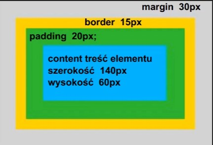

Formatowanie tekstu:
- <b> - Pogrubiony tekst
- <i> - Pochylony tekst
- <u> - Podkreślony tekst
- <mark> - Wyróżniony tekst
- <strong> - Pogrubiony tekst, semantycznie ważny, wyróżniony
- <em> - Emfaza, pochylony, semantycznie znaczący mniejszą wagę niż strong
- <abbr> - Skrót ( HTML )
- <small> - Służy aby zmniejszyć czcionkę
- <blockquote> - Służy jako wyodrębnienie tekstu np. cytatu
- <span> - Jest magazynem inliniowym
- <s> - Skreśla tekst
- <sub> - Indeks dolny
- <sup> - Indeks górny
- <del> - Usuwa i skreśla
Prawidłowe zagnieżdżanie:
Aby prawidłowo zagnieżdżcić znacznik w znaczniku powinniśmy robić tak:
<p> tekst w danym znaczniku <p> prawidłowe zagnieżdżanie i zamknięcie </p> zamknięcie pierwotnego znacznika </p>
Pojedyncze znaczniki:
- <br> - przenosi do nowej lini
- <hr> - horyzontalna linia na całą szerokość
Znaki specjalne:
- Znak specjalny copyright: ©
- Zarejestrowany znak towarowy ®
- Zwykły znak towarowy ™
- Telefon ☎
- Funt szterling £
- Połówka ½ oraz ½
Kliknij tutaj po więcej znaków specjalnych
Listy:
Wyróżniamy dwie listy <ol> czyli lista uporządkowana oraz <ul> lista nieuporządkowana
Jest kilka typów ol:
- A - z dużej litery
- a - z małej litery
- I - z duże rzymskie
- i - z małe rzymskie
- reversed - układanie od tyłu
Atrybut start umożliwia nam zaczynanie od wybranej pozycji na liście uporządkowanej.
Tabele:
- <Table> - tabela
- <Tr> - wiersz (table road)
- <Td> - poszczególna komórka
- <Caption> - podpis tabeli
- <Thead> - nagłówek tabeli
- <tbody> - właściwa treść tabeli
- <tfoot> - stopka (podsumowanie)
Atrybuty:
Atrybuty pozwalają na dodatkowe określenie wartości elementów html, to dodatkowa informacja dla
przeglądarki o elemencie. Atrbuty znajdują się wyłącznie w tagu otwierającym
Możesz stworzyć własny atrybut pisząc: <data-gallery-name="nazwaAtrybutu">
Strona do atrybutów danego znacznika
Klasy oraz indetyfikatory
Jak chcemy wybrany element wystylować w css to nadajemy mu klasę za pomocą: <class="nazwa-klasy"> w tagu
otwierającym, i pózniej zaznaczamy go w stylu css za pomocą .nazwa-klasy w sekcji head lub w oddzielnym pliku
Klasy możemy używać wielokrotnie i ma mniejszą ważność niż indetyfikator
Indetyfikatory (id) jest unikalnym kluczem w dokumencie html, # (hash) używa się w stylach css
aby odnależć id. Używa się go raz na wybranym elemencie.
Znaczniki semantyczne:
To są znaczniki które same sugerują co będzie w nazwie np footer - stopka (dodatowe informacje)
Kontenery
Kontenery to grupy które mają za zadanie grupowanie i stylowanie zebranych elementów, wyróżniamy 3 takie kontenery:
<article>, <div>, <section>, <span>
Zdjęcia:
Aby dodać zdjęcie trzeba użyć znacznika:
<img src="nazwa_zdjęcia.jpg" alt="Tekst który się wyświetli jeśli zdjęcie się nie załaduje">
Możemy również dodać zdjęcie za pomocą linku do zdjecia:
<img src="link obrazu" alt="Tekst który się wyświetli jeśli zdjęcie się nie załaduje">
Video
Aby dodać video należy używać znacznika
< video controls src="link do nagrania"></video>
albo użyć < video controls src="plik video.mp4"></video>
Hiperłącza:
Hiperłącza czyli inaczej link do innej strony
<a href="#">link bezwzględny>
<a href=".../nazwa-folderu.html">link względny odwołuje się do głównego folderu z /nazwa-folderu.html>
<a href=".../Screenshots.png">link odwołuje się do folderu wyżej z ../Screenshots.png>
<a href=".../...Screenshots2.png">odwołanie się do folderu wyżej wyżej ../..Screenshots2.png>
<a href="tel:123123123"> - telefon komórkowy 123123123 >
<a href="mailto:nazwamaila@gmail.com"> - mail >
<a href="#"> - pusty link>
<a href="#kotwica"> możemy za pomocą linków założyć kotwice i przechodzić kliknięciem do danego elementu.
Aby tak zrobić musisz mieć odnośnik z id (tam gdzie chcesz szybko się przenosić) oraz użyć #nazwaKotwicy >
Box model
Każdy element html są pudełkami (z ang. box) i posiadają wysokość oraz szerokość
Każdy element ma wysokość oraz szerokość, ale są zasadnicze różnice między elementami blokowymi oraz linowymi
- Elementy Blokowe:
- - są elementami prostokątnymi
- - mogą mieć ustawioną szerokość wysokość, margines i dopełnienie
- - nie łamią się jak tekst do nowej lini
- Elementy liniowe:
- - płyną z tekstem wraz z innymi elemenatmi liniowymi
- - nie mogą mieć ustawionej szerokości oraz długości, marginesów i dopełnienia
- - łamią się z końcem linii
Wszystkie te właściwości muszą być przewidywalne i muszą działać na wszystkich przeglądarkach
Model pudełkowy pozwala nam na budowanie układu - layoutu strony z klocków z uzględnieniem:
- wymiarów każdego z elementów blokowego
- marginesów czyli odstępow między elementami
- padding tworzy wewnętrzne dopełnienie między obramowaniem, a treścią
- określa pozycję na stronie
Domyślne wartości elementów blokowych:
Elementy blokowe mają width na 100% dzięki czemu wypełniają calą dostępną linie, height auto pozwala na dostosowywanie
się wysokości elementu do ilości treści
Box sizing:
Określa jak width, height, margin oraz padding wpływa na element html, często sprawia, że
elementy nie zachowują tak jak byśmy się spodziewali. dostępne wartości:
- Content-box - domyślna wartość, szerokość i wysokość zawiera samą treść, bez dopełnienia, oraz obramowania.
- Padding-box - szerokość i wysokość zawiera treść i dopełnienie.
- Border-box - szerokość, wysokość zawiera treść, dopełnienie oraz obramowanie.
Jaką w praktyce element blokowy ma width oraz height? można to policzyć
Szerokośc pudełka:
width + padding (left i right) + border (left i right) = 140 + 2 x 20px + 2 x 15px = 210px
Wysokość pudelka:
height + padding + border = 60 + 2 x 20px + 2 x 15px = 130px

Display
Właściwość display jest kluczem w kontroli układu strony w dokumencie HTML. Elementy html mają z góry ustalone
domyślne wartości display jak inline czy block.
Dispaly inline:
Liniowe elementy zajmują tylko tyle miejsca ile potrzebują. ustawiają sie jeden po drugim i nie mogą posiadać jako dzieci
elementów blokowych.
Przykłady elementów liniowych: <a>,<i>,<u>b<img>,<strong>,<small>
Elementy liniowe przed oraz za innym elementem blokowymi bedą w oddzielnej linii, ale to wynika z natury
elementu blokowego, a nie liniowego. Element blokowy zawsze zaczyna się i zajmuję całą linię.
Jedyny sposób kiedy element liniowy przechodzi do nowej linii jest, gdy nie mieści się na szerokość
okna. Taka treść musi przejść do nowej linii, ale ponownie zajmuje tyle miejsca ile jest jej potrzebne.
Ustawianie width oraz height dla elementu liniowego nie ma sensu, zajmie i tak tyle miejsca ile jest mu potrzebne ma
własną treść.
Elementy liniowe zastępowalne (replaced element)
Jest jednak jeden wyjątek, elementy liniowe jak obrazek czy video, którym mozna ustawić wymiary width i height.
Natomiast to co zostanie załadowane w video czy obrazek potrzebuje więcej miejsca, przez co rozpycha te elementy.
Treść tych elementów może mieć ustawione wymiary jak szerokość i wysokość.
Nagłówki:
Wyróżniamy 6 wielkości nagłówka od największego do najmniejszego:
- <h1>Tekst</h1>
- <h2>Tekst</h2>
- <h3>Tekst</h3>
- <h4>Tekst</h4>
- <h5>Tekst</h5>
- <h6>Tekst</h6>
Dodatkowe znaczniki blokowe:
<main>Znacznik w którym powinniśmy umieszczać główną treść</main>
<header>Zazwyczaj uzywamy go jako nagłówka w kodzie</header>
<footer>Używamy go jako stopkę strony</footer>